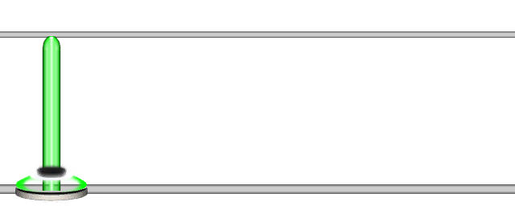

Set Note Properties
Aliases
SET_NOTE_PROPERTIES, SETPROP, SNP
Overview
The Set Note Properties function sets the properties of the previous note. It is functionally identical to using curly braces {} after a note.
Note
By default, the length parameter snaps to after the sustain. Use a carat after the Set Note Properties function ^ to make it not snap.
Arguments
| Name | Type | Description |
|---|---|---|
| Length (optional) | float | The length of the note in steps. |
| Type (optional) | string | The type of the note. |
Note Length
The first parameter is the length to set the previous note to in steps. If the quantization is 1/16, then a value of 16 will be 16 steps long, or one measure in this case.
Tip
If you want a note of length 31 1/32nd steps at quantization 1/16 you can use a decimal point and write 15.5.
Note Type
The second parameter of the Set Note Properties function defines the previous note's type. This does not override any external type specifications specified by functions such as tge HOPO, Force, Strum and Tap functions. Type is defined as follows (case insensitive):
| Input | NoteType |
|---|---|
0 or n or natural |
Natural |
1 or f or h or forced or hopo |
Forced |
2 or t or tap |
Tap |
Example 1
3SNP(8)
Sets the length of the green note to 8 steps.

Example 2
1SNP(4, tap)
Sets the length of the green note to 4 steps, and sets it to a tap.
Example 3
1{4}23{4}^1245
Example showing curly bracket {} usage as well as not snapping.
Note
Setting note properties within a chord, by default does not snap. This is to make extended sustains easier. Any length property defined outside the chord such as [123]{4} will snap 4 steps forwards.